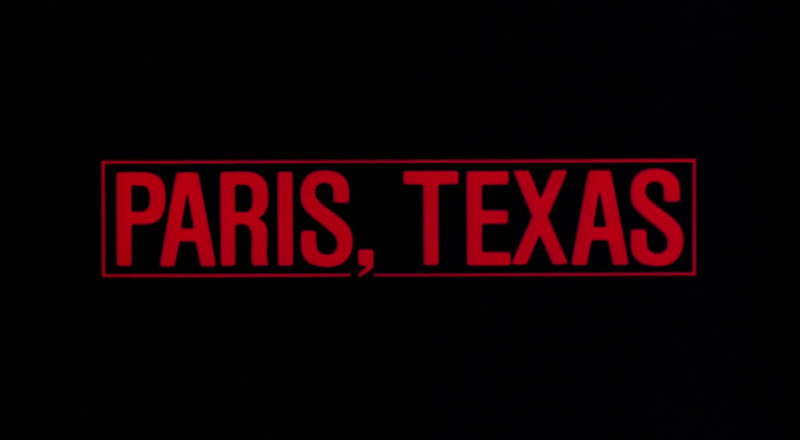
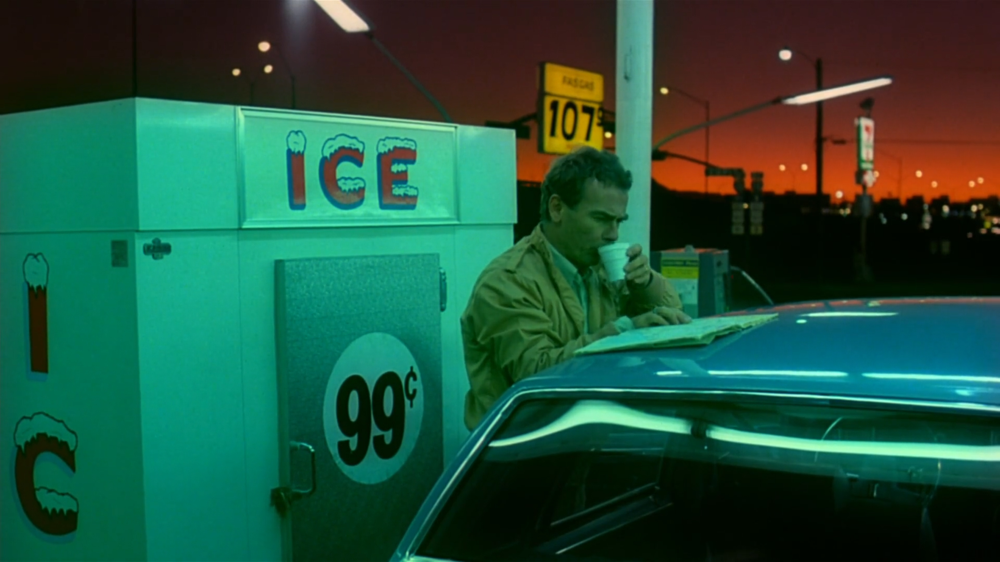
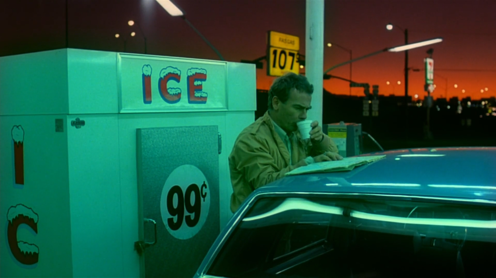

back


Complying with safety instructions just isn’t his thing. Covering up hot water pipes with insulation because of regulations? When, practically speaking, their heat could be used to warm a room? That’s not an option for Arno Brandlhuber.


photography: Anna Schunck
text: Ailine Liefeldr
In Berlin, the name Brandlhuber stands above all for house number nine – the house in Brunnenstrasse in the Mitte district where you can plug your headphones into the façade. Where the narrow, concrete stairs in the courtyard wind their way up four floors and where the unfinished and the mutable form the heart of a modern and sustainable architecture. Arno Brandlhuber’s work stretches far beyond the borders of Berlin Mitte’s creative habitat. As an architect, he is concerned with the reality of our urban present and is committed to preserving what the city was once known for – its heterogeneity, the oft-cited ‘Berlin mix’.


photography: Philipp Langenheim
text: Antonia Märzhäuser
.


photography: Iwan Baan, Armin Linke and Giulia Bruno
text: provided by the architects
The site contains ruins that form part of the UNESCO Pearling Path. The entire building functions as the entrance to the cultural heritage and the foyer for the medina. It is an urban room for the people of Muharraq with the scale of a public park.
photography: valerio olgiati
text: provided by the architects

photography: valerio olgiati
text: provided by the architects


photography: Noshe
text: provided by the architects
Exposed to the southeast and long unoccupied, the terrain is one of the last remaining non-built plots on the immediate shoreline of Arcachon Bay. A stretch of sand dune covered with arbutuses, mimosas and 46 pine trees rises then rapidly descends once more towards the Bay. How does one preserve the dune and its vegetation, when building round and about means to cut down trees and even to build right on the ground?
To avoid the felling of pine trees and the clearing of the low vegetation of the arbutuses, whose impact, seen from the Bay, is particularly perceptible. To raise the house above the ground in order to profit from the view. To exclude the heavy earthworks which are particularly degrading for a ground surface of sand, twelve micro-piles are driven eight to ten meters deep. On top a metal frame, which creeps up between the trees, has been assembled. The facade on the Bay side is open and glazed; the three others are more closed and intersected with transparent bays. The height beneath the platform is variable, but always sufficient to permit one to pass under it.
Like the side facades, the underside consists of aluminium panels, creating an artificial sky which, because the undulations are perpendicular to the Bay, reflects its luminosity. The pine trees are preserved, including those situated within the four walls of the building itself. These trees traverse the house in special holders adapted to their swaying, their growth and their maintenance in a good state of health. Running along the edge of the beach, the traditional wooden retaining wall has been remade.

photography: Hisao Suzuki & Philippe Ruault
text: provided by the architects


photography: studio mumbai
text: provided by the architects

photography: studio mumbai
text: provided by the architects
Nest We Grow is an open & public structure in northern Japan. Its main intent is to bring people in the community together to store, prepare and enjoy local food. The openness of the façade allows the building to incorporate the surrounding natural environment into the interior climate, but can also be closed off to create a buffer between the two. The funnel-shaped roof harvests rain water and snow melt. The collected water is delivered to tanks that are then used to irrigate the plants in the concrete wall. The shape signifies the Nest’s ability to bring nature in the form of air, water and light into the Nest.
Made in collaboration with the College of Environmental Design UC Berkeley.
photography: shinkenchiku sha
text: provided by the architects

photography: courtsey of the architects
text: provided by the architects
photography: courtsey of the architects
text: provided by the architects
this is project 1


this is project 2


this is project 1
 



Yutaka Takanashi


peru, 1972
sahara, 1988
canada, 1974
gobi desert, 1996
scan : monoskop
Lettre à Picasso en calligrame en forme de tableau cubiste

scan : bibliothèque nationale de France, département réserve des livres rares, RES M-V-359